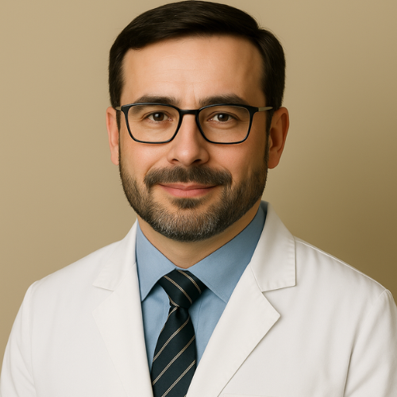

Dr. Lucas Moreira
Graduação em Odontologia pela Universidade de São Paulo (USP)
Especialização em Cariologia e Dentística Restauradora pela Universidade Estadual de
Campinas (UNICAMP)
Especialização em Microbiologia e Parasitologia Odontológica pela Universidade Federal do
Rio de Janeiro (UFRJ)
Especialização em Anestesiologia e Terapêutica Odontológica pela Universidade de Pernambuco
(UPE)
Mestrado em Fisiologia Oral e Bioquímica Aplicada pela Universidade Federal de Minas Gerais
(UFMG)
Disciplinas Lecionadas
1° Período
- Biologia Básica
2° Período
- Biologia Oral
- Anatomia Básica
- Bioquímica e Biofísica
3° Período
- Fisiologia Básica
4° Período
- Introdução à Dentística
5° Período
- Semiologia
7° Período
- Odontopediatria Pré-Clínica